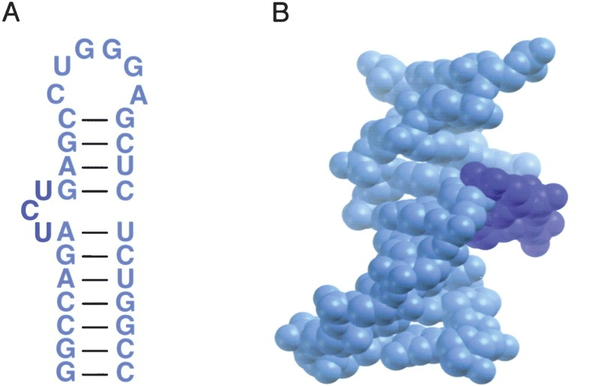
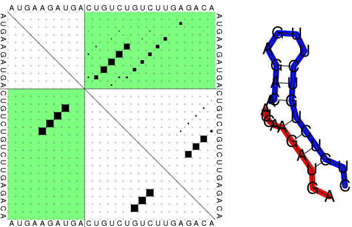

En contraste con las moléculas de DNA, que en sus papeles más comunes actúan como dobles hélices, las moléculas de RNA pueden adoptar una mayor variedad de conformaciones, igual de complejas que las de las proteínas, que a su vez les permiten tener diferentes funciones , ya sea mensajero, RNA de transferencia, ribosomal, regulador o enzima. Por primera vez en este curso vamos a ir un poco más allá de lo que expresa una secuencia lineal:
|

|
La estructura secundaria de una molécula de RNA, sostenida por medio de puentes de hidrógeno (de tipo Watson-Crick y Hoogsteen) entre nucleótidos, puede aproximarse a partir del conocimiento de la secuencia, aunque obviamente se pierde parte de la complejidad del plegamiento, como sugiere la figura 4.1. Para qué sirven este tipo de predicciones? Por ejemplo, para descubrir RNAs no codificantes, que a menudo tienen funciones biológicas importantes, como se discute en el artículo de Washietl et al. (2005). Hay muchos programas disponibles que pueden ayudarnos en este tipo de tareas, como MC-Fold | MC-Sym, Mfold, Vienna, RNAz, infernal o EDeN, especializado en ncRNAs.
Un programa complementario, que asigna elementos de estructura secundaria dadas unas coordenadas en formato PDB, es DSSR.
Aquí nos vamos a centrar en ilustrar el algoritmo de Nussinov et al. (1978) para predecir estructura secundaria de RNA por medio de alineamientos, que usa una estrategia de programación dinámica (DP) para maximizar el número de puentes de hidrógeno que se forman dentro de la secuencia. Éste puede decirse que es el algoritmo fundamental para resolver este problema aunque tiene algunas limitaciones. Por ejemplo, no considera la posibilidad de pseudonudos ( pseudoknots ) ni tiene en cuenta el apilamiento de bases ( base stacking ), un tipo de interacción que favorece la estabilidad de estas estructuras, elementos que sí son proyectados en el software actual (Dotu et al., 2014).
El código fuente que se muestra implementa este algoritmo, evaluando recursivamente hasta 4 situaciones en cada posición de la matrix DP (Eddy, 2004):
#!/usr/bin/perl -w
# prog2.1 algoritmo tipo Nussinov de prediccion de estructura secundaria de RNA,
# adaptado de:
# F Burkowski (2009) Structural Bioinformatics, an algorithmic approach, CRC Press
# Rex A Dwyer (2002) Genomic Perl, Cambrige University Press
use strict;
## 0) parametros del algoritmo:
my %HBonds = ( 'GU'=>-1, 'UG'=>-1, 'AU'=>-2, 'UA'=>-2, 'CG'=>-3, 'GC'=>-3 ); # puentes H en ~kcal/mol
my $MINSEP = 3; # min separacion en secuencia para definir un par de bases: un loop contiene 3+ bases
my $MINSTEM = 2; # longitud minima de region complementaria para tallos bifurcados
my $DEBUG = 1;
print "# params: MINSEP=$MINSEP MINSTEM=$MINSTEM DEBUG=$DEBUG\n\n";
# 0.1) secuencia de RNA de partida, comenta
my $RNA = 'GCUCAAAGUATACCAGGAGG'; #'CCCCUUUUGGGG'; 'CUGUCUGUCUUGAGACA'; 'GCUCAAAGUATACCAGGAGG';
## 1) rellena la matriz o tabla de programacion dinamica
my @matriz_align = prog_dinamica( $DEBUG, $MINSEP, $MINSTEM, \&evalfunc, $RNA );
## 2) muestra energia libre de la estructura secundaria encontrada
print "# energia libre derivada del alineamiento = ".$matriz_align[1][length($RNA)]{'matriz'}." kcal/mol\n";
## 2) calcula el mejor camino o alineamiento
print "$RNA\n" . reconstruye_alineamiento(1,length($RNA),\@matriz_align) . "\n";
###############################################################################
# devuelve un entero
# funcion que evalua un par de bases recurriendo al hash global %HBonds
sub evalfunc
{
my ($par) = @_;
return $HBonds{$par} || 0;
}
# devuelve @alignmat[][]{}, con llaves 'eval','matriz','caso','k'
sub prog_dinamica
{
my ($print_matrix,$minsep,$minstem,$ref_funcion_eval,$secuencia) = @_;
my $long = length($secuencia);
my @sec = (' ', split(//, $secuencia)); # primera posicion vacia ' ' para contar desde 1
my ($l,$i,$j,$k,$par,$bonds,$min,$minbif,$caso1,$caso2,$caso3,$caso4,@matriz,@alignmat);
# 1) inicia la matriz marcando la diagonal de pares prohibidos < $minsep
for $i (1 .. $long-$minsep){ $matriz[$i][$i+$minsep] = 0; }
# 2) inicia la primera diagonal permitida
for $i (1 .. $long-$minsep-1)
{
$par = $sec[$i].$sec[$i+$minsep+1];
$matriz[$i][$i+$minsep+1] = $ref_funcion_eval->($par);
$alignmat[$i][$i+$minsep+1]{'eval'} = $ref_funcion_eval->($par);
$alignmat[$i][$i+$minsep+1]{'caso'} = 1;
}
# 3) rellena recursivamente $long-5 diagonales restantes en la matriz de prog dinamica
# $i extremo izquierdo, $j extremo derecho
for $l (5 .. $long-1)
{
for $i (1 .. $long-$l)
{
$j = $i+$l;
$par = $sec[$i].$sec[$j];
$bonds = $ref_funcion_eval->($par);
$alignmat[$i][$j]{'eval'} = $bonds;
$min = 100;
# 3.1) prueba las 4 situaciones posibles dados i,j
$caso1 = $matriz[$i+1][$j-1] + $bonds; # 1: nuevo par de bases alineados
$caso2 = $matriz[$i+1][$j]; # 2: gap en un extremo, se conserva evaluacion anterior
$caso3 = $matriz[$i][$j-1]; # 3: gap en extremo opuesto, se conserva evaluacion
# (observa que no hay gap penalty)
$caso4 = 100;
if($j > $i+3+($minstem*2)) # 4: bifurcacion en base k si hay distancia suficiente
{
# ._i k_.-._. j_. i____k.....j
# . . . . ...........
# . . * ..........
# * .........
# ........
# .______
# ......
# .....
# (*=loop de $minsep) ....
# ...
# ..
# .
for $k ($i+2+($minstem*2) .. $j-3-($minstem*2))
{
$minbif = $matriz[$i][$k] + $matriz[$k+1][$j];
if($minbif < $caso4)
{
$caso4 = $minbif;
$alignmat[$i][$j]{'k'} = $k;
}
}
}
# 3.2) elige la mejor en esta posicion, actualizando $min
if($caso1 < $min && $bonds < 0)
{
$min = $caso1;
$alignmat[$i][$j]{'caso'} = 1;
}
if($caso2 < $min)
{
$min = $caso2;
$alignmat[$i][$j]{'caso'} = 2;
}
if($caso3 < $min)
{
$min = $caso3;
$alignmat[$i][$j]{'caso'} = 3;
}
if($caso4 < $min)
{
$min = $caso4;
$alignmat[$i][$j]{'caso'} = 4;
}
# 3.3) anota la opcion mas favorecida en esta posicion
$matriz[$i][$j] = $min;
$alignmat[$i][$j]{'matriz'} = $min;
}
}
# 4) imprime la matriz si se require
if($print_matrix)
{
for $i (1 .. $long)
{
for $j (1 .. $long)
{
$bonds = $matriz[$i][$j] || 0;
if($i == $j){ $bonds = $sec[$i] }
elsif($i==$long){ $bonds = $j }
elsif($j==1){ $bonds = $i }
elsif($j-$i <= $minsep){ $bonds = '.' }
printf("%4s",$bonds);
}print "\n";
}print "\n";
}
return @alignmat;
}
# Devuelve una cadena de caracteres que codifican un alineamiento o estructura secundaria con pares
# alineados marcados como ()
sub reconstruye_alineamiento
{
my ($i,$j,$ref_align_matrix) = @_; # i,j coordenadas en la matriz $ref_align_matrix
my $caso = $ref_align_matrix->[$i][$j]{'caso'} || 0;
if($caso == 1)
{
return '(' . reconstruye_alineamiento($i+1,$j-1,$ref_align_matrix) . ')';
}
elsif($caso == 2)
{
return '.' . reconstruye_alineamiento($i+1,$j,$ref_align_matrix);
}
elsif($caso == 3)
{
return reconstruye_alineamiento($i,$j-1,$ref_align_matrix);
}
elsif($caso == 4)
{
my $k = $ref_align_matrix->[$i][$j]{'k'};
return reconstruye_alineamiento($i,$k,$ref_align_matrix) .
reconstruye_alineamiento($k+1,$j,$ref_align_matrix);
}
else{ return ' ' x ($j-$i+1); }
}
|

|